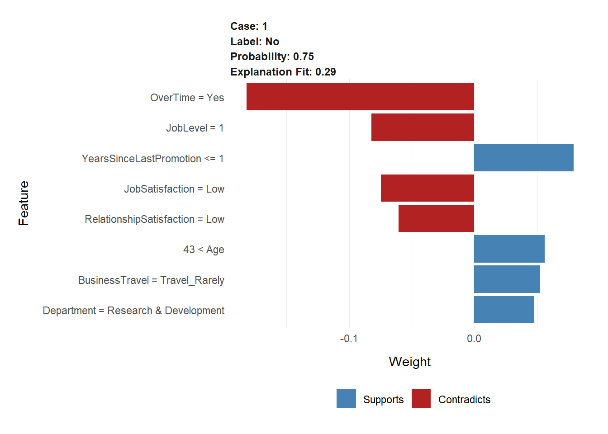
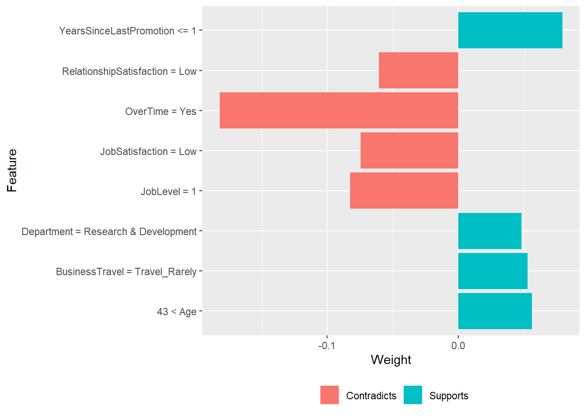
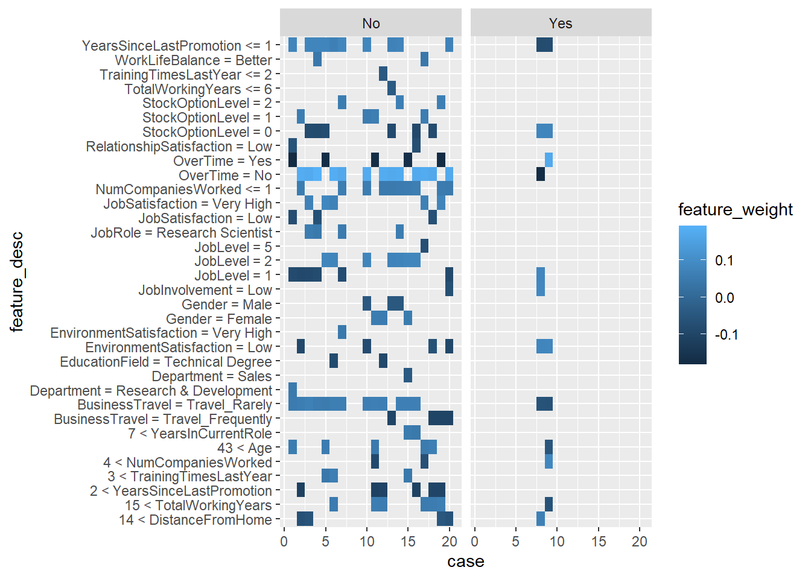

library(h2o)
library(recipes)
library(readxl)
library(tidyverse)
library(tidyquant)
library(lime)process_hr_data_readable <- function(data, definitions_tbl) {
definitions_list <- definitions_tbl %>%
fill(...1, .direction = "down") %>%
filter(!is.na(...2)) %>%
separate(...2, into = c("key", "value"), sep = " '", remove = TRUE) %>%
rename(column_name = ...1) %>%
mutate(key = as.numeric(key)) %>%
mutate(value = value %>% str_replace(pattern = "'", replacement = "")) %>%
split(.$column_name) %>%
map(~ select(., -column_name)) %>%
map(~ mutate(., value = as_factor(value)))
for (i in seq_along(definitions_list)) {
list_name <- names(definitions_list)[i]
colnames(definitions_list[[i]]) <- c(list_name, paste0(list_name, "_value"))
}
data_merged_tbl <- list(HR_Data = data) %>%
append(definitions_list, after = 1) %>%
reduce(left_join) %>%
select(-one_of(names(definitions_list))) %>%
set_names(str_replace_all(names(.), pattern = "_value",
replacement = "")) %>%
select(sort(names(.))) %>%
mutate_if(is.character, as.factor) %>%
mutate(
BusinessTravel = BusinessTravel %>% fct_relevel("Non-Travel",
"Travel_Rarely",
"Travel_Frequently"),
MaritalStatus = MaritalStatus %>% fct_relevel("Single",
"Married",
"Divorced")
)
return(data_merged_tbl)
}employee_attrition_tbl <- read_csv("./03_ml_aut_files/datasets-1067-1925-WA_Fn-UseC_-HR-Employee-Attrition.txt")
definitions_raw_tbl <- read_excel("./03_ml_aut_files/data_definitions.xlsx", sheet = 1, col_names = FALSE)
employee_attrition_readable_tbl <- process_hr_data_readable(employee_attrition_tbl, definitions_raw_tbl)
# Split into test and train
set.seed(seed = 1113)
split_obj <- rsample::initial_split(employee_attrition_readable_tbl, prop = 0.85)
# Assign training and test data
train_readable_tbl <- training(split_obj)
test_readable_tbl <- testing(split_obj)
recipe_obj <- recipe(Attrition ~ ., data = train_readable_tbl) %>%
step_zv(all_predictors()) %>%
step_mutate_at(c("JobLevel", "StockOptionLevel"), fn = as.factor) %>%
prep()
train_tbl <- bake(recipe_obj, new_data = train_readable_tbl)
test_tbl <- bake(recipe_obj, new_data = test_readable_tbl)
h2o.init()## Connection successful!
##
## R is connected to the H2O cluster:
## H2O cluster uptime: 1 days 2 hours
## H2O cluster timezone: Europe/Berlin
## H2O data parsing timezone: UTC
## H2O cluster version: 3.36.1.2
## H2O cluster version age: 17 days
## H2O cluster name: H2O_started_from_R_Balint_Programming_ljv376
## H2O cluster total nodes: 1
## H2O cluster total memory: 1.45 GB
## H2O cluster total cores: 4
## H2O cluster allowed cores: 4
## H2O cluster healthy: TRUE
## H2O Connection ip: localhost
## H2O Connection port: 54321
## H2O Connection proxy: NA
## H2O Internal Security: FALSE
## R Version: R version 4.2.0 (2022-04-22 ucrt)#automl_leader <- h2o.loadModel("./04_perf_meas_files/StackedEnsemble_BestOfFamily_2_AutoML_1_20220612_170511")
split_h2o <- h2o.splitFrame(as.h2o(train_tbl), ratios = c(0.85), seed = 1234)## | | | 0% | |======================================================================| 100%train_h2o <- split_h2o[[1]]
valid_h2o <- split_h2o[[2]]
test_h2o <- as.h2o(test_tbl)## | | | 0% | |======================================================================| 100%# Set the target and predictors
y <- "Attrition"
x <- setdiff(names(train_h2o), y)
automl_models_h2o <- h2o.automl(
x = x,
y = y,
training_frame = train_h2o,
validation_frame = valid_h2o,
leaderboard_frame = test_h2o,
max_runtime_secs = 30,
nfolds = 5
)## | | | 0% | |=== | 4%
## 13:50:30.701: User specified a validation frame with cross-validation still enabled. Please note that the models will still be validated using cross-validation only, the validation frame will be used to provide purely informative validation metrics on the trained models.
## 13:50:30.705: AutoML: XGBoost is not available; skipping it. | |========== | 15% | |================= | 24% | |======================== | 34% | |=============================== | 44% | |====================================== | 54% | |============================================= | 64% | |=================================================== | 74% | |================================================================= | 93% | |======================================================================| 100%automl_leader <- automl_models_h2o@leaderexplainer <- train_tbl %>%
select(-Attrition) %>%
lime(
model = automl_leader,
bin_continuous = TRUE,
n_bins = 4,
quantile_bins = TRUE
)
explainer## $model
## Model Details:
## ==============
##
## H2OBinomialModel: deeplearning
## Model ID: DeepLearning_1_AutoML_8_20220613_135030
## Status of Neuron Layers: predicting Attrition, 2-class classification, bernoulli distribution, CrossEntropy loss, 1,202 weights/biases, 25.7 KB, 11,133 training samples, mini-batch size 1
## layer units type dropout l1 l2 mean_rate rate_rms momentum
## 1 1 95 Input 0.00 % NA NA NA NA NA
## 2 2 10 Rectifier 0.00 % 0.000000 0.000000 0.171431 0.383219 0.000000
## 3 3 10 Rectifier 0.00 % 0.000000 0.000000 0.002269 0.001392 0.000000
## 4 4 10 Rectifier 0.00 % 0.000000 0.000000 0.027517 0.137661 0.000000
## 5 5 2 Softmax NA 0.000000 0.000000 0.027193 0.077375 0.000000
## mean_weight weight_rms mean_bias bias_rms
## 1 NA NA NA NA
## 2 0.001846 0.139357 0.523021 0.063004
## 3 0.001420 0.344227 1.008057 0.070857
## 4 0.008959 0.318378 0.987074 0.013702
## 5 -0.089381 1.298995 0.001241 0.003281
##
##
## H2OBinomialMetrics: deeplearning
## ** Reported on training data. **
## ** Metrics reported on full training frame **
##
## MSE: 0.06603464
## RMSE: 0.2569721
## LogLoss: 0.2339818
## Mean Per-Class Error: 0.177941
## AUC: 0.9102949
## AUCPR: 0.7684808
## Gini: 0.8205898
##
## Confusion Matrix (vertical: actual; across: predicted) for F1-optimal threshold:
## No Yes Error Rate
## No 867 42 0.046205 =42/909
## Yes 48 107 0.309677 =48/155
## Totals 915 149 0.084586 =90/1064
##
## Maximum Metrics: Maximum metrics at their respective thresholds
## metric threshold value idx
## 1 max f1 0.267612 0.703947 129
## 2 max f2 0.131772 0.747059 192
## 3 max f0point5 0.431739 0.771325 90
## 4 max accuracy 0.431739 0.921053 90
## 5 max precision 0.964372 1.000000 0
## 6 max recall 0.002837 1.000000 390
## 7 max specificity 0.964372 1.000000 0
## 8 max absolute_mcc 0.267612 0.654801 129
## 9 max min_per_class_accuracy 0.116955 0.838710 208
## 10 max mean_per_class_accuracy 0.131772 0.853022 192
## 11 max tns 0.964372 909.000000 0
## 12 max fns 0.964372 154.000000 0
## 13 max fps 0.000358 909.000000 399
## 14 max tps 0.002837 155.000000 390
## 15 max tnr 0.964372 1.000000 0
## 16 max fnr 0.964372 0.993548 0
## 17 max fpr 0.000358 1.000000 399
## 18 max tpr 0.002837 1.000000 390
##
## Gains/Lift Table: Extract with `h2o.gainsLift(<model>, <data>)` or `h2o.gainsLift(<model>, valid=<T/F>, xval=<T/F>)`
## H2OBinomialMetrics: deeplearning
## ** Reported on validation data. **
## ** Metrics reported on full validation frame **
##
## MSE: 0.09728897
## RMSE: 0.3119118
## LogLoss: 0.338005
## Mean Per-Class Error: 0.188507
## AUC: 0.877551
## AUCPR: 0.7599859
## Gini: 0.755102
##
## Confusion Matrix (vertical: actual; across: predicted) for F1-optimal threshold:
## No Yes Error Rate
## No 138 9 0.061224 =9/147
## Yes 12 26 0.315789 =12/38
## Totals 150 35 0.113514 =21/185
##
## Maximum Metrics: Maximum metrics at their respective thresholds
## metric threshold value idx
## 1 max f1 0.266321 0.712329 34
## 2 max f2 0.158132 0.717822 49
## 3 max f0point5 0.572517 0.772727 17
## 4 max accuracy 0.266321 0.886486 34
## 5 max precision 0.987207 1.000000 0
## 6 max recall 0.004790 1.000000 157
## 7 max specificity 0.987207 1.000000 0
## 8 max absolute_mcc 0.266321 0.642612 34
## 9 max min_per_class_accuracy 0.158132 0.763158 49
## 10 max mean_per_class_accuracy 0.262867 0.814447 38
## 11 max tns 0.987207 147.000000 0
## 12 max fns 0.987207 37.000000 0
## 13 max fps 0.000945 147.000000 184
## 14 max tps 0.004790 38.000000 157
## 15 max tnr 0.987207 1.000000 0
## 16 max fnr 0.987207 0.973684 0
## 17 max fpr 0.000945 1.000000 184
## 18 max tpr 0.004790 1.000000 157
##
## Gains/Lift Table: Extract with `h2o.gainsLift(<model>, <data>)` or `h2o.gainsLift(<model>, valid=<T/F>, xval=<T/F>)`
## H2OBinomialMetrics: deeplearning
## ** Reported on cross-validation data. **
## ** 5-fold cross-validation on training data (Metrics computed for combined holdout predictions) **
##
## MSE: 0.08853012
## RMSE: 0.2975401
## LogLoss: 0.3106614
## Mean Per-Class Error: 0.2376273
## AUC: 0.8398843
## AUCPR: 0.5955692
## Gini: 0.6797686
##
## Confusion Matrix (vertical: actual; across: predicted) for F1-optimal threshold:
## No Yes Error Rate
## No 823 86 0.094609 =86/909
## Yes 59 96 0.380645 =59/155
## Totals 882 182 0.136278 =145/1064
##
## Maximum Metrics: Maximum metrics at their respective thresholds
## metric threshold value idx
## 1 max f1 0.320834 0.569733 145
## 2 max f2 0.144985 0.632911 229
## 3 max f0point5 0.647518 0.626398 61
## 4 max accuracy 0.647518 0.890977 61
## 5 max precision 0.985471 1.000000 0
## 6 max recall 0.000724 1.000000 399
## 7 max specificity 0.985471 1.000000 0
## 8 max absolute_mcc 0.320834 0.491616 145
## 9 max min_per_class_accuracy 0.144985 0.771177 229
## 10 max mean_per_class_accuracy 0.144985 0.772685 229
## 11 max tns 0.985471 909.000000 0
## 12 max fns 0.985471 154.000000 0
## 13 max fps 0.000724 909.000000 399
## 14 max tps 0.000724 155.000000 399
## 15 max tnr 0.985471 1.000000 0
## 16 max fnr 0.985471 0.993548 0
## 17 max fpr 0.000724 1.000000 399
## 18 max tpr 0.000724 1.000000 399
##
## Gains/Lift Table: Extract with `h2o.gainsLift(<model>, <data>)` or `h2o.gainsLift(<model>, valid=<T/F>, xval=<T/F>)`
## Cross-Validation Metrics Summary:
## mean sd cv_1_valid cv_2_valid cv_3_valid
## accuracy 0.877841 0.021644 0.863850 0.896714 0.877934
## auc 0.842272 0.029637 0.829273 0.881203 0.853105
## err 0.122159 0.021644 0.136150 0.103286 0.122066
## err_count 26.000000 4.636809 29.000000 22.000000 26.000000
## f0point5 0.583149 0.072244 0.520231 0.670103 0.617647
## f1 0.598624 0.071052 0.553846 0.702703 0.617647
## f2 0.615999 0.075168 0.592105 0.738636 0.617647
## lift_top_group 6.429757 1.074968 4.896552 6.264706 6.264706
## logloss 0.310635 0.032918 0.335720 0.278662 0.302584
## max_per_class_error 0.371196 0.081298 0.379310 0.235294 0.382353
## mcc 0.528472 0.081508 0.478474 0.643798 0.545021
## mean_per_class_accuracy 0.774240 0.043022 0.761432 0.843247 0.772511
## mean_per_class_error 0.225760 0.043022 0.238568 0.156753 0.227489
## mse 0.088521 0.010399 0.102133 0.079251 0.086796
## pr_auc 0.597865 0.086620 0.495843 0.691956 0.683785
## precision 0.573749 0.075273 0.500000 0.650000 0.617647
## r2 0.283242 0.108287 0.131625 0.409209 0.352970
## recall 0.628804 0.081298 0.620690 0.764706 0.617647
## rmse 0.297117 0.017387 0.319582 0.281516 0.294611
## specificity 0.919676 0.018743 0.902174 0.921788 0.927374
## cv_4_valid cv_5_valid
## accuracy 0.849765 0.900943
## auc 0.801134 0.846647
## err 0.150235 0.099057
## err_count 32.000000 21.000000
## f0point5 0.497076 0.610687
## f1 0.515151 0.603774
## f2 0.534591 0.597015
## lift_top_group 6.870968 7.851852
## logloss 0.353506 0.282702
## max_per_class_error 0.451613 0.407407
## mcc 0.427749 0.547320
## mean_per_class_accuracy 0.724743 0.769269
## mean_per_class_error 0.275257 0.230731
## mse 0.096014 0.078409
## pr_auc 0.546089 0.571651
## precision 0.485714 0.615385
## r2 0.227920 0.294488
## recall 0.548387 0.592593
## rmse 0.309862 0.280017
## specificity 0.901099 0.945946
##
## $preprocess
## function (x)
## x
## <bytecode: 0x000001a557b8d108>
## <environment: 0x000001a5566d1d30>
##
## $bin_continuous
## [1] TRUE
##
## $n_bins
## [1] 4
##
## $quantile_bins
## [1] TRUE
##
## $use_density
## [1] TRUE
##
## $feature_type
## Age BusinessTravel DailyRate
## "numeric" "factor" "numeric"
## Department DistanceFromHome Education
## "factor" "numeric" "factor"
## EducationField EmployeeNumber EnvironmentSatisfaction
## "factor" "numeric" "factor"
## Gender HourlyRate JobInvolvement
## "factor" "numeric" "factor"
## JobLevel JobRole JobSatisfaction
## "factor" "factor" "factor"
## MaritalStatus MonthlyIncome MonthlyRate
## "factor" "numeric" "numeric"
## NumCompaniesWorked OverTime PercentSalaryHike
## "numeric" "factor" "numeric"
## PerformanceRating RelationshipSatisfaction StockOptionLevel
## "factor" "factor" "factor"
## TotalWorkingYears TrainingTimesLastYear WorkLifeBalance
## "numeric" "numeric" "factor"
## YearsAtCompany YearsInCurrentRole YearsSinceLastPromotion
## "numeric" "numeric" "numeric"
## YearsWithCurrManager
## "numeric"
##
## $bin_cuts
## $bin_cuts$Age
## 0% 25% 50% 75% 100%
## 18 30 36 43 60
##
## $bin_cuts$BusinessTravel
## NULL
##
## $bin_cuts$DailyRate
## 0% 25% 50% 75% 100%
## 102 465 797 1147 1499
##
## $bin_cuts$Department
## NULL
##
## $bin_cuts$DistanceFromHome
## 0% 25% 50% 75% 100%
## 1 2 7 14 29
##
## $bin_cuts$Education
## NULL
##
## $bin_cuts$EducationField
## NULL
##
## $bin_cuts$EmployeeNumber
## 0% 25% 50% 75% 100%
## 1 511 1040 1573 2065
##
## $bin_cuts$EnvironmentSatisfaction
## NULL
##
## $bin_cuts$Gender
## NULL
##
## $bin_cuts$HourlyRate
## 0% 25% 50% 75% 100%
## 30 49 66 83 100
##
## $bin_cuts$JobInvolvement
## NULL
##
## $bin_cuts$JobLevel
## NULL
##
## $bin_cuts$JobRole
## NULL
##
## $bin_cuts$JobSatisfaction
## NULL
##
## $bin_cuts$MaritalStatus
## NULL
##
## $bin_cuts$MonthlyIncome
## 0% 25% 50% 75% 100%
## 1051 2929 4908 8474 19999
##
## $bin_cuts$MonthlyRate
## 0% 25% 50% 75% 100%
## 2094 8423 14470 20689 26968
##
## $bin_cuts$NumCompaniesWorked
## 0% 25% 50% 75% 100%
## 0 1 2 4 9
##
## $bin_cuts$OverTime
## NULL
##
## $bin_cuts$PercentSalaryHike
## 0% 25% 50% 75% 100%
## 11 12 14 18 25
##
## $bin_cuts$PerformanceRating
## NULL
##
## $bin_cuts$RelationshipSatisfaction
## NULL
##
## $bin_cuts$StockOptionLevel
## NULL
##
## $bin_cuts$TotalWorkingYears
## 0% 25% 50% 75% 100%
## 0 6 10 15 38
##
## $bin_cuts$TrainingTimesLastYear
## 0% 25% 50% 100%
## 0 2 3 6
##
## $bin_cuts$WorkLifeBalance
## NULL
##
## $bin_cuts$YearsAtCompany
## 0% 25% 50% 75% 100%
## 0 3 5 9 37
##
## $bin_cuts$YearsInCurrentRole
## 0% 25% 50% 75% 100%
## 0 2 3 7 18
##
## $bin_cuts$YearsSinceLastPromotion
## 0% 50% 75% 100%
## 0 1 2 15
##
## $bin_cuts$YearsWithCurrManager
## 0% 25% 50% 75% 100%
## 0 2 3 7 17
##
##
## $feature_distribution
## $feature_distribution$Age
##
## 1 2 3 4
## 0.2602082 0.2834267 0.2217774 0.2345877
##
## $feature_distribution$BusinessTravel
##
## Non-Travel Travel_Rarely Travel_Frequently
## 0.1000801 0.7181745 0.1817454
##
## $feature_distribution$DailyRate
##
## 1 2 3 4
## 0.2514011 0.2489992 0.2497998 0.2497998
##
## $feature_distribution$Department
##
## Human Resources Research & Development Sales
## 0.04323459 0.65092074 0.30584468
##
## $feature_distribution$DistanceFromHome
##
## 1 2 3 4
## 0.2954363 0.2369896 0.2241793 0.2433947
##
## $feature_distribution$Education
##
## Below College College Bachelor Master Doctor
## 0.11689351 0.18895116 0.38510809 0.27461970 0.03442754
##
## $feature_distribution$EducationField
##
## Human Resources Life Sciences Marketing Medical
## 0.01761409 0.41793435 0.10888711 0.31144916
## Other Technical Degree
## 0.05444355 0.08967174
##
## $feature_distribution$EmployeeNumber
##
## 1 2 3 4
## 0.2506005 0.2497998 0.2497998 0.2497998
##
## $feature_distribution$EnvironmentSatisfaction
##
## Low Medium High Very High
## 0.1913531 0.1961569 0.3018415 0.3106485
##
## $feature_distribution$Gender
##
## Female Male
## 0.4123299 0.5876701
##
## $feature_distribution$HourlyRate
##
## 1 2 3 4
## 0.2618094 0.2473979 0.2449960 0.2457966
##
## $feature_distribution$JobInvolvement
##
## Low Medium High Very High
## 0.05684548 0.25780624 0.58927142 0.09607686
##
## $feature_distribution$JobLevel
##
## 1 2 3 4 5
## 0.36829464 0.36509207 0.14651721 0.07526021 0.04483587
##
## $feature_distribution$JobRole
##
## Healthcare Representative Human Resources Laboratory Technician
## 0.08646918 0.03682946 0.18174540
## Manager Manufacturing Director Research Director
## 0.06885508 0.09927942 0.05924740
## Research Scientist Sales Executive Sales Representative
## 0.18654924 0.22337870 0.05764612
##
## $feature_distribution$JobSatisfaction
##
## Low Medium High Very High
## 0.1873499 0.1985588 0.3018415 0.3122498
##
## $feature_distribution$MaritalStatus
##
## Single Married Divorced
## 0.3306645 0.4571657 0.2121697
##
## $feature_distribution$MonthlyIncome
##
## 1 2 3 4
## 0.2506005 0.2497998 0.2497998 0.2497998
##
## $feature_distribution$MonthlyRate
##
## 1 2 3 4
## 0.2506005 0.2497998 0.2497998 0.2497998
##
## $feature_distribution$NumCompaniesWorked
##
## 1 2 3 4
## 0.48118495 0.09927942 0.20496397 0.21457166
##
## $feature_distribution$OverTime
##
## No Yes
## 0.7165733 0.2834267
##
## $feature_distribution$PercentSalaryHike
##
## 1 2 3 4
## 0.2866293 0.2738191 0.2289832 0.2105685
##
## $feature_distribution$PerformanceRating
##
## Low Good Excellent Outstanding
## 0.0000000 0.0000000 0.8414732 0.1585268
##
## $feature_distribution$RelationshipSatisfaction
##
## Low Medium High Very High
## 0.1889512 0.2161729 0.3018415 0.2930344
##
## $feature_distribution$StockOptionLevel
##
## 0 1 2 3
## 0.43554844 0.40592474 0.10168135 0.05684548
##
## $feature_distribution$TotalWorkingYears
##
## 1 2 3 4
## 0.3050440 0.3306645 0.1224980 0.2417934
##
## $feature_distribution$TrainingTimesLastYear
##
## 1 2 3
## 0.4603683 0.3306645 0.2089672
##
## $feature_distribution$WorkLifeBalance
##
## Bad Good Better Best
## 0.05204163 0.22497998 0.61889512 0.10408327
##
## $feature_distribution$YearsAtCompany
##
## 1 2 3 4
## 0.3226581 0.2137710 0.2217774 0.2417934
##
## $feature_distribution$YearsInCurrentRole
##
## 1 2 3 4
## 0.46757406 0.08726982 0.27542034 0.16973579
##
## $feature_distribution$YearsSinceLastPromotion
##
## 1 2 3
## 0.6413131 0.1120897 0.2465973
##
## $feature_distribution$YearsWithCurrManager
##
## 1 2 3 4
## 0.46357086 0.09767814 0.25300240 0.18574860
##
##
## attr(,"class")
## [1] "data_frame_explainer" "explainer" "list"explanation <- test_tbl %>%
slice(1:20) %>%
select(-Attrition) %>%
lime::explain(
# Pass our explainer object
explainer = explainer,
# Because it is a binary classification model: 1
n_labels = 1,
# number of features to be returned
n_features = 8,
# number of localized linear models
n_permutations = 5000,
# Let's start with 1
kernel_width = 1
)## | | | 0% | |======================================================================| 100%
## | | | 0% | |======================================================================| 100%explanationexplanation %>%
as.tibble()case_1 <- explanation %>%
filter(case == 1)
case_1 %>%
plot_features()
case_1 %>%
ggplot(aes(y=feature_desc, x =feature_weight)) +
geom_col(aes(fill = feature_weight > 0)) +
xlab("Weight") +
ylab("Feature") +
scale_fill_discrete(name = "", labels = c("Contradicts", "Supports")) +
theme(legend.position = "bottom")
explanation %>%
mutate(case = as.double(case)) %>%
ggplot(aes(y=feature_desc, x =case, fill = feature_weight)) +
geom_tile() +
facet_wrap(~label) 